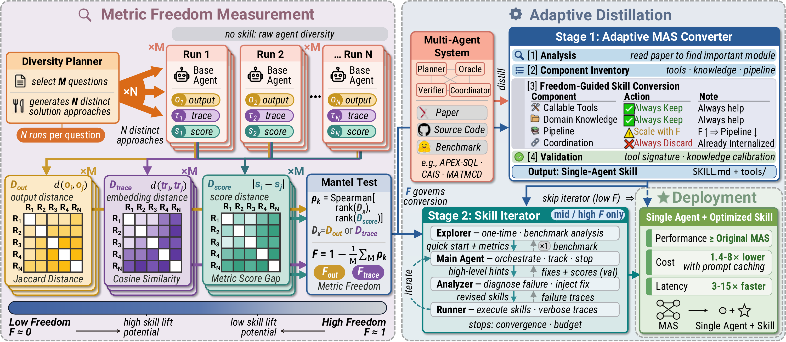

Metric Freedom (F)
Quantifies how tightly behavioral variation couples with score variation. Low F: a knife-edge corridor—structure helps. High F: a flat landscape—structure hurts exploration.
arXiv 2026
Paper: From Multi-Agent to Single-Agent: When Is Skill Distillation Beneficial?
1The Chinese University of Hong Kong 2LIGHTSPEED, Tencent
Multi-agent systems (MAS) distribute expertise but incur heavy coordination overhead, context fragmentation, and brittle phase ordering. Distilling a MAS into a single-agent skill can bypass these costs, yet outcomes are inconsistent: skill lift ranges from a 28% improvement to a 2% degradation on the exact same task. We show that skill utility is governed by the evaluation metric, not the task. We introduce Metric Freedom (F), an a priori predictor of skill utility via a Mantel test over output diversity and score variance. Guided by F, AdaSkill selectively distills tools and knowledge while discarding restrictive structure on free metrics, and applies iterative refinement only where the landscape is forgiving. Across 4 tasks, 11 datasets, and 6 metrics, F strongly predicts skill utility (r=−0.85). AdaSkill matches or exceeds the original MAS while reducing cost up to 8× and latency up to 15×.
Quantifies how tightly behavioral variation couples with score variation. Low F: a knife-edge corridor—structure helps. High F: a flat landscape—structure hurts exploration.
Always keep tools; distill knowledge as conditional references; scale pipeline rigidity with F; always drop inter-agent coordination.
Iterate only on mid/high-F metrics where improvement is monotonic. Disable iteration on low-F metrics where fixes oscillate.
Stage 1 converts a MAS into a single-agent skill under Metric Freedom. Stage 2 optionally refines the skill with a four-agent loop (Explore · Main · Analyzer · Runner) when residual headroom is safe to chase.

On Causal Estimation, identical agent outputs yield large gains under MSA ((F≈0.1) but flat or negative lifts under MRE (F≈0.8–1.0). Skill utility is metric topology, not task difficulty.
Component ablations show tools and knowledge help broadly, while pipeline structure alone drives the negative correlation with F ((r≈−0.83)—so AdaSkill keeps structure only where F is low.
| Task | Datasets | Metrics | F regime | AdaSkill takeaway |
|---|---|---|---|---|
| Causal Estimation | QRData, Synthetic, Real | MSA, MRE | Low / High | Same skill, opposite lifts across metrics |
| Text-to-SQL | BIRD-147, Spider-120 | EX, NSF | Mid | Best single-agent EX without MAS cost |
| Causal Discovery | AutoMPG, DWD, Sachs, Child | F1 | Low–Mid | Largest gains on lowest-F dataset |
| Feature Engineering | Taobao, Dia | AUC | High | Drop pipeline; win on cost & latency |
Code, evaluation runners, and distillation scripts will live in the public repository. Star and follow for releases.
git clone https://github.com/Tencent/AdaSkill.git
cd AdaSkill
# see README for environment setup and reproduction commands